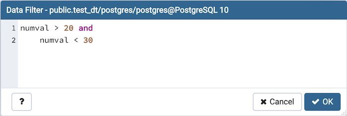

View/Edit Data Filter¶
You can access Data Filter dialog by clicking on Filtered Rows toolbar button visible on the Browser panel or by selecting View/Edit Data -> Filtered Rows context menu option.
This allows you to specify an SQL Filter to limit the data displayed in the edit grid window:
Note
Use SHIFT + ENTER keys to apply filter.